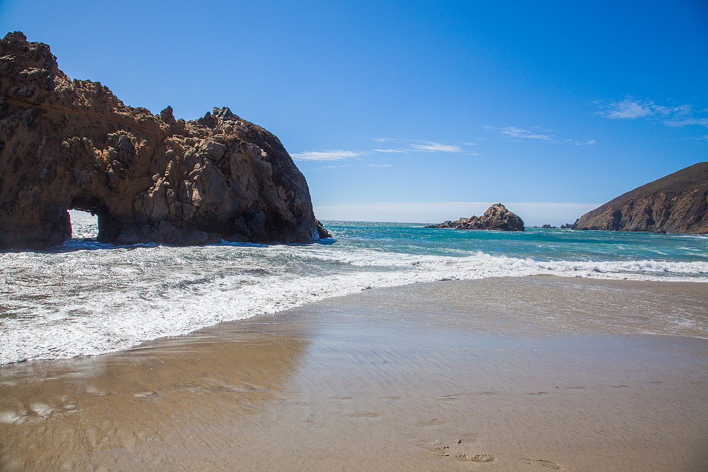

Discover California's Stunning Beaches
Santa Monica Beach

Enjoy the iconic Santa Monica Beach, located just west of downtown Los Angeles. Soak up the sun, take a dip in the Pacific Ocean, and stroll along the famous Santa Monica Pier. Don't forget to indulge in beachside dining and shopping on the lively Third Street Promenade.
Learn MoreLa Jolla Cove, San Diego

Discover the beauty of La Jolla Cove, a picturesque beach nestled in the charming coastal town of San Diego. Marvel at the crystal-clear waters, explore sea caves, and catch a glimpse of seals and sea lions. Snorkeling and scuba diving are popular activities here.
Learn MorePfeiffer Beach, Big Sur
Escape to the rugged beauty of Pfeiffer Beach, located in Big Sur along the stunning California coastline. This secluded beach is known for its stunning purple sand, sea stacks, and dramatic rock formations. It's a perfect spot for romantic sunsets and peaceful walks.
Learn MoreZuma Beach, Malibu
Experience the laid-back vibes of Zuma Beach in Malibu. This wide sandy beach offers excellent swimming, surfing, and sunbathing opportunities. Enjoy picnicking, beach volleyball, and beautiful coastal views along this pristine stretch of coastline.
Learn More